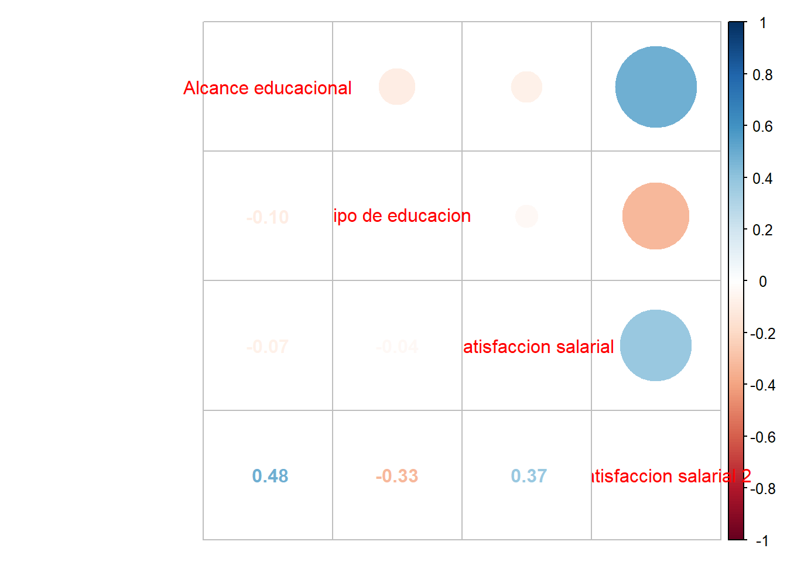
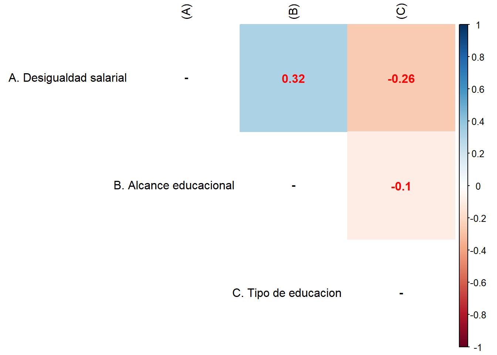

La desigualdad es un fenómeno multidimensional que afecta diversos aspectos de la sociedad y compromete significativamente la calidad de vida. En Chile, este problema persiste pese a los esfuerzos por mitigarlo, afectando profundamente tanto a la población como a sus instituciones. Uno de los ámbitos donde la desigualdad se manifiesta con claridad es en el sector educativo, particularmente en la disparidad de oportunidades y resultados entre los distintos tipos de educación superior.
Este trabajo analiza cómo estas diferencias educativas influyen en la satisfacción salarial de los egresados, explorando específicamente si el tipo de educación superior recibida determinan la percepción de equidad y satisfacción con los ingresos obtenidos de sus empleos, sin considerar ganancias adicionales. Así, se plantea la siguiente pregunta de investigación: ¿Cómo afecta el tipo de la educación superior en Chile al nivel de satisfacción salarial y a la percepción de desigualdad entre los egresados? Para poder entender mejor esta desigualdad mencionada, es importante recordad como la desigualdad afecta al sistema educativo, ya que, para este análisis se considerará como la desproporcionada atención y remuneración, dada a líneas de trabajo o especializaciones que estén alineadas con el interés político- económico del país “debían generar la oferta académica en concordancia con las necesidades humano-técnicas que requerían los proyectos estratégicos puestos en marcha por la Senplades.” ([@auquicalle2023]); esto se podría considerar tanto causa como consecuencia de la condición que aplica esto, a la educación del país. Siendo un sistema educativo que, pese a que existan y se ofrezcan diferentes tipos de educación superior, se le asocia la idea de que hay algunos dentro de este grupo que tienen más beneficios económicos que otros, aumentando así la tendencia en que las personas ingresas a estos tipos de educación superior, “América Latina presenta indicadores que hacen de su sistema superior un sistema de acceso de masas. La tabla 2 refleja el incremento en el tiempo y muestra el aumento sostenido de la tasa bruta de matriculación” ([@lacontr2023]).
El otro aspecto de la desigualdad que afecta a chile y su población es la salarial, aun que al igual que la desigualdad educacional, es una desigualdad que puede considerarse y estudiarse desde diferentes perspectivas, en este trabajo se entenderá la desigualdad salarial como a la situación en la que dos personas pueden trabajar lo mismo, sin embargo, una recibirá más ingresos que la otra, dependiendo del título que lleve cada una, y no por su actividad siendo tal, que en situaciones personas pueden trabajar más que otras, y no llegar a fin de mes para pagar las cuentas “existe discriminación en el mercado de trabajo cuando un grupo de individuos recibe injustificadamente y de manera independiente a sus habilidades, un trato desfavorable que afecta su participación y desarrollo dentro de este mercado.” ([@delaluztovar2023]). Si bien pueden ser diferentes las situaciones de cada persona, así como los factores que le afectan (diferentes gastos), en este análisis centraremos la atención en cómo, aunque personas si dediquen tiempo a especializarse en sus estudios, va a depender de tipo de educación superior que reciban los ingresos que reciban “No obstante, otra característica ha sido la persistente desigualdad en la distribución de ingresos” ([@iturra2023]). Para poder entender la relación que hay entre las personas y su satisfacción por los ingresos actuales remunerados, se entenderá el tomar horas extras en el trabajo como la necesidad de generar más ingresos para poder cubrir sus gastos, siendo actuales o futuros.
Para realizar nuestro análisis sobre cómo el tipo de educación superior influye en la satisfacción con el salario recibido, utilizaremos la base de datos de la Encuesta CASEN 2022. Seleccionaremos como indicadores las preguntas: ¿Con qué frecuencia recibe ingresos por horas extras? y ¿En qué tipo de institución realizó su educación superior? Interpretaremos la primera pregunta como un indicativo de la necesidad o elección de generar ingresos adicionales, debido a que el salario base no es suficiente para cubrir la calidad de vida deseada por la persona. La segunda pregunta nos permitirá explorar los distintos tipos de educación superior presentes en Chile y su relación con la satisfacción salarial.
Entrega 4:
Para esta parte del trabajo se usaran las variables de una base de datos procesada, en la cual se incluyen las variables e8: ¿en que tipo de institucion realizo su educacion superior?, e6a: ¿Cual es el nivel educacional al que asiste o el mas alto al cual asistio?, y3ap: ¿con que freciencia recibe ingresos por horas extras?, y3fp: ¿con que frecuencia recibe ingresos por otros ingresos?. se añadieron estas dos variables para poder enriquecer el analisis en cuanto comparaciones y asi poder entender mejor como se interpretaran los datos perdidos o NA. A continuacion se trabajara con las variables para poder ver su correlacion y regresion con la que se pueden visibilizar y analizar.
M <-cor(proc_data, use ="complete.obs")corrplot.mixed(M)

corrplot::corrplot(M,method ="color", # Cambia los círculos por color completo de cada cuadranteaddCoef.col ="red", # Color de los coeficientestype ="upper", # Deja solo las correlaciones de arribatl.col ="black", # COlor letras, rojo por defectona.label ="-")
Warning in psych::alpha(dplyr::select(proc_data, `Tipo de educacion`, `Alcance educacional`, : Some items were negatively correlated with the first principal component and probably
should be reversed.
To do this, run the function again with the 'check.keys=TRUE' option
Some items ( Tipo de educacion ) were negatively correlated with the first principal component and
probably should be reversed.
To do this, run the function again with the 'check.keys=TRUE' option
Reliability analysis
Call: psych::alpha(x = dplyr::select(proc_data, `Tipo de educacion`,
`Alcance educacional`, `Insatisfaccion salarial`, `Insatisfaccion salarial 2`))
raw_alpha std.alpha G6(smc) average_r S/N ase mean sd median_r
0.0035 0.089 0.12 0.024 0.098 0.0037 2.7 0.93 0.032
95% confidence boundaries
lower alpha upper
Feldt 0 0 0.01
Duhachek 0 0 0.01
Reliability if an item is dropped:
raw_alpha std.alpha G6(smc) average_r S/N
Tipo de educacion 0.26 0.2479 0.19271 0.09900 0.3296
Alcance educacional -0.11 -0.0027 0.05734 -0.00091 -0.0027
Insatisfaccion salarial -0.19 -0.0695 -0.00043 -0.02213 -0.0649
Insatisfaccion salarial 2 0.06 0.0557 0.03850 0.01929 0.0590
alpha se var.r med.r
Tipo de educacion 0.0026 0.00951 0.116
Alcance educacional 0.0044 0.04160 0.029
Insatisfaccion salarial 0.0047 0.03040 0.035
Insatisfaccion salarial 2 0.0033 0.00049 0.029
Item statistics
n raw.r std.r r.cor r.drop mean sd
Tipo de educacion 36924 0.97 0.41 -0.14 -0.120 3.4 1.68
Alcance educacional 202231 0.91 0.55 0.23 0.096 2.8 0.93
Insatisfaccion salarial 5230 0.65 0.58 0.35 0.144 1.5 1.07
Insatisfaccion salarial 2 273 0.68 0.52 0.26 -0.026 2.0 1.58
Non missing response frequency for each item
1 2 3 4 5 6 7 miss
Tipo de educacion 0.12 0.28 0.13 0.16 0.24 0.01 0.06 0.82
Alcance educacional 0.09 0.29 0.38 0.23 0.01 0.00 0.00 0.00
Insatisfaccion salarial 0.76 0.12 0.06 0.02 0.02 0.02 0.00 0.97
Insatisfaccion salarial 2 0.65 0.04 0.18 0.01 0.01 0.09 0.00 1.00
mean(proc_data$`Tipo de educacion`); mean(proc_data$`Alcance educacional`); mean(proc_data$`Desigualdad salarial`)
[1] NA
[1] 2.794438
Warning in mean.default(proc_data$`Desigualdad salarial`): argument is not
numeric or logical: returning NA
Min. 1st Qu. Median Mean 3rd Qu. Max. NA's
2.00 2.00 2.00 3.31 4.00 12.00 202182
Debemos recordar que , Alcance educacional: 0, Tipo de educacion: 165.307, Insatisfaccion salarial: 197.001, Insatisfaccion salarial 2: 201.958.
Ahora se realizaran una regresion tomando como intercepto la Desigualdad salarial de ambos casos, la cual utiliza de indicador las variables de insatisfaccion salarial. para esto tambien se creara otra base de datos procesada pero sin NA.
prod_data <- proc_data %>%select(`Desigualdad salarial`, `Alcance educacional`, `Tipo de educacion`)M <-cor(prod_data, use ="complete.obs") diag(M) =NArownames(M) <-c("A. Desigualdad salarial","B. Alcance educacional","C. Tipo de educacion")colnames(M) <-c("(A)", "(B)","(C)")corrplot::corrplot(M,method ="color", addCoef.col ="red", type ="upper", tl.col ="black",na.label ="-")

prod_data$`Tipo de educacion`<-as_factor(proc_data$`Tipo de educacion`)prod_data$`Alcance educacional`<-as_factor(proc_data$`Alcance educacional`)prod_data <-na.omit(prod_data)reg1 <-lm(`Desigualdad salarial`~1, data=prod_data)stargazer(reg1, type="text")
Warning: package 'texreg' was built under R version 4.3.3
Version: 1.39.3
Date: 2023-11-09
Author: Philip Leifeld (University of Essex)
Consider submitting praise using the praise or praise_interactive functions.
Please cite the JSS article in your publications -- see citation("texreg").
reg2 <-lm(`Desigualdad salarial`~`Tipo de educacion`, data=prod_data)reg3 <-lm(`Desigualdad salarial`~`Alcance educacional`, data=prod_data)coef_names_reg2 <-c("Intercepto","Centro de Formación Técnica","Instituto Profesional","Universidad privada no CRUCH","Universidad privada CRUCH","Universidad Estatal","Universidad Extranjera")coef_names_reg3 <-c("Intercepto","Educación superior","Educación post-superior")custom_coef_names <-c(coef_names_reg2, coef_names_reg3[-1])length(custom_coef_names)
[1] 9
length_coefs_reg2 <-length(coef(summary(reg2))[, "Estimate"])length_coefs_reg3 <-length(coef(summary(reg3))[, "Estimate"])custom_coef_names <-c(coef_names_reg2[1:length_coefs_reg2],coef_names_reg3[2:(length_coefs_reg3 +1)])reg2 <-lm(`Desigualdad salarial`~`Tipo de educacion`, data = prod_data)reg3 <-lm(`Desigualdad salarial`~`Alcance educacional`, data = prod_data)names(coef(summary(reg2)))
NULL
names(coef(summary(reg3)))
NULL
coef_reg2 <-names(coef(summary(reg2)))coef_reg3 <-names(coef(summary(reg3)))custom_coef_names <-c(coef_reg2, coef_reg3)knitreg(list(reg2, reg3),custom.model.names =c("Modelo 1", "Modelo 2"),custom.note ="*** p < 0.001; ** p < 0.01; * p < 0.05",custom.coef.names = custom_coef_names,caption ="Desigualdad salarial",caption.above =TRUE)
Podemos ver en el modelo 1, que analiza el tipo de establecimiento en el que egreso de su educación superior, como se puede interpretar que al ver el tipo de educación como referencia la desigualdad salarial es de 3.00 con un 95% de confianza. Se podría notar como no se expresaron datos muy significantes (R ^ 2: 0,16), pero se entiende que tiene que ver con el filtro que se usó para poder visualizar el problema, lo que nos permite notar como las personas de institutos profesionales perciben entre 1,50 más de desigualdad salarial más que en otros establecimientos, lo que se traduce en más tiempo que tiene que invertir en conseguir ingresos adecuados para su estilo de vida ideal. Así como podemos ver que las Universidad privada perteneciente al Consejo de Rectores (CRUCH), Universidad Estatal y Universidad Extranjera, presentan números negativos lo que se puede expresar en casos de la contra parte de la desigualdad, entendiendo como ellos perciben menos la desigualdad salarial o directamente no la experimentan debido al establecimiento del cual egresaron.
Modelo 2:
El modelo 2 al ser el alcance educacional el referente, la desigualdad salarial daría en un 3.33 con un 99% de confianza. Esto más tomando en cuenta la educación superior vs la educación post-superior, podemos analizar como la desigualdad salarial es algo que no escapa ni si quiera para quienes dedican más tiempo a los estudios, dando cuenta como incluso gente de educación post-superior evidencia un 3.67 de desigualdad salarial, vs la educación superior (2.43)